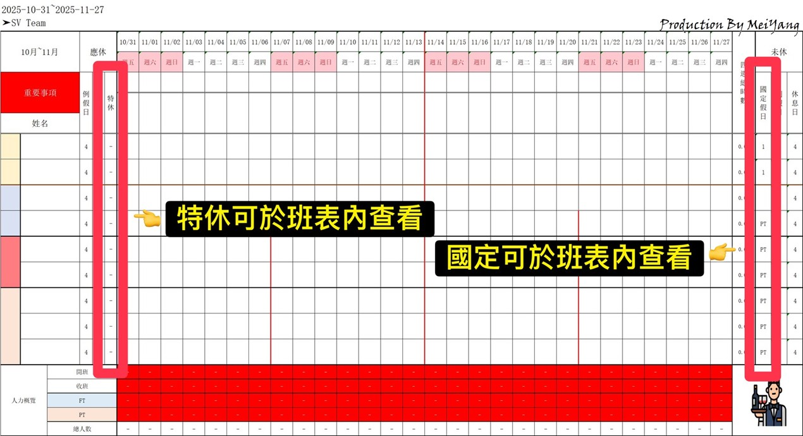
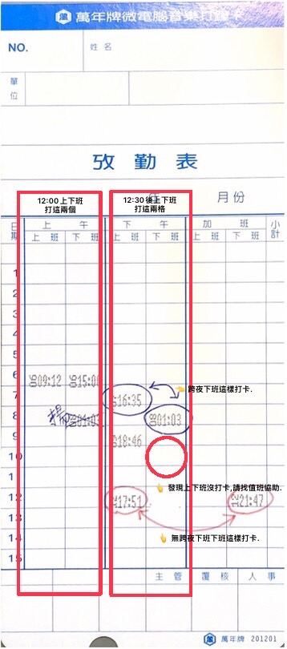

📆 四週變形工時班表
預排開放
開放連結為底下說明:
1. 點擊記事本公告內預排連結前往系統.
2. 查看E-mail授權通知.
預排關閉
於時間內完成排班:
1. 預排班表關閉後,移除正兼職權限.
2. 預排完成,開啟主管權限調整人力.
班表公開
查看更新完成後班表:
1. 於記事本內總班表查審.
2. 班表公開後預排班表權限將失效.
班表說明
班表分類說明如下:
1. 特休概覽表.
2. 國定及原民日概覽表.
預排開放
開放連結為底下說明:
1. 點擊記事本公告內預排連結前往系統.
2. 查看E-mail授權通知.
1. 點擊記事本公告內預排連結前往系統.
2. 查看E-mail授權通知.
- 【 每三週預排流程 】
- 第一天﹕10:00後開啟《劃休預排系統》。
- 第三天﹕22:00後關閉《劃休預排系統》。
- 第六天﹕班表公開《總班表》。

- 【 快速簡易判斷 】
- 正職紅線隔日為預排開啟日。
- 如下方圖片所示﹕

班表備註
班表分類說明如下:
1. 特休概覽表.
2. 國定及原民日概覽表.
1. 特休概覽表.
2. 國定及原民日概覽表.
- 【 特別休假概覽表 】﹕
- 班表內可觀看個人今年及去年度特休狀況。
- 可隨時查看已使用日期及天數。
- 如下圖所示﹕

- 【 國定假日概覽表 】
- 班表分頁中之國定假日概覽表內查看。
- 可隨時查看已使用日期及天數。
- 如下圖所示﹕

📑 異動班別審查系統
異動鍵入
依各團隊或職稱分類鍵入表單:
1. 鍵入同仁各項資訊.
異動說明
以下須特別注意:
1. 異動別.
2. 歸屬列別.
異動審核
於每週一審核上週一至日異動,
有下列幾種審核後核准圖示:
【 💡 提醒 】 【 ❌ 退件 】
【 🛎️ 補件 】 【 ✅ 通過 】
異動備註
異動前後須知:
1. 已發出提醒.
2. 說明及退件.
異動備註
異動前後須知:
1. 已發出提醒.
2. 說明及退件.
1. 已發出提醒.
2. 說明及退件.
- 【 提醒通知 】﹕
- 於禮拜一前完成上週異動。
- 若已發出異動審核提醒﹐但尚未異動上週班別﹐異動後請於提醒通知回覆並tag名揚。
- 若發出異動審核提醒﹐週一當日又有異動﹐無須回覆異動提醒這則﹐因週一已為下週。
- 【 說明及退件】
- 若完成修正﹐皆須回覆通知並tag名揚。
- 用回覆可往上查找至原始訊息並結案。
- 如下圖所示﹕
📝 工時登記審查系統
出勤卡片
表單內系統,請先查看:
1. 若有塗改出勤卡片主管須簽名.
2. 詳細解說點擊查看詳見圖表.
出勤鍵入
依各團隊或職稱分類鍵入表單:
1. 鍵入同仁各項資訊.
2. 公式中小計為簡易判斷,還須自行判別.
出勤審核
於每週二審核上週一至日出勤,
有下列幾種審核後核准圖示:
【 💡 提醒 】
【 ❌ 退件 】 【 ⚠️ 說明 】
【 🛎️ 補件 】 【 ✅ 通過 】
審核備註
工時為每位同仁薪資換算基準,
須仔細並認真查審及鍵入,
須特別注意:
1. 工時及休息時間
2. 加班時數
出勤卡片
表單內系統,請先查看:
1. 若有塗改出勤卡片主管須簽名.
2. 詳細解說點擊查看詳見圖表.
1. 若有塗改出勤卡片主管須簽名.
2. 詳細解說點擊查看詳見圖表.
- 【 打卡位置 】
- 早晚班打卡方式。
- 跨夜打卡方式。
- 如下方圖片所示﹕
 - 【 卡片說明 】
- 基本資訊填寫。
- 若有遲到﹐當天日期打星號。
- 於每週日的日期都圈起來。
- 重複打卡﹑未打卡或塗改皆須主管簽名。
- 例﹑休及相關假別也須填寫。
- 如下方圖片所示﹕